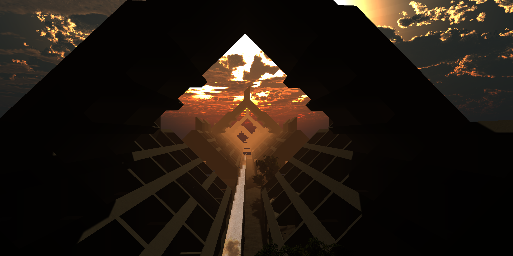

neill kaipo shikada
portfolio
resume
about

LOMEX VR
exploring an unbuilt mid-century modern world
plein air work
oil paintings and more
scalar playground
brooklyn, new york city
processional crematorium
gainesville, florida
AR overlays
philadelphia, pennsylvania
urban gateway
savannah, georgia
framing space-time
philadelphia, pennsylvania
penn museum
philadelphia, pennsylvania